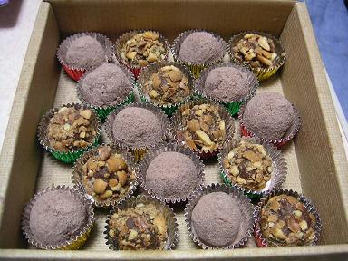

日々、想ふ
〜過去感じたことがつれづれと〜
（できるだけ最大化してお読みください）
一覧へ
ジェネレーションギャップ。２/１５
テスト勉強しないと、タケユキです。
バイト先には女子高生がいる。
年は一個しか違わないが、女子高生がいる。
何人かいる。２，３人くらいいる。
代わりにバイト入ってもらおうとしたりする時便利だってんで、
バイト先の人みんなでメールアドレスくらいは交換してる。
てなわけで俺もその高校生のアドレスは知ってる、
全然メール来ないけど。
それでバレンタインの朝その高校生からチェーンメールじゃないが
バレンタインの画像付きのメールが届いた。
「バレンタインだよぉ。☆ぃぇぃ★
・・・・・・・・・・・・・・・・
バレンタインのチョコ（画像）あげゆぅ♪
・・・・・・・・・・・・・・・・
今日バイトがんばってねん☆」
その文章、解読不能。
そこらへんの入試問題より超難関。
むしろ、その日本語らしからぬ文章に怒り漂う。
なにが「ぃぇぃ」か。
これお前全部小文字じゃないかよ。
声に出して言えるのか、「ぃぇぃ」って。
他にも正しい日本語とは言いがたい文章があちらこちらに。
これが若者言葉かって思う自分がそこにいた。
今日の日記：実は今日二日分（１４日分）更新した。
バレンタイン。２/１４
今日はバレンタインのレシピを紹介、タケユキです。

・明治ミルクチョコレート ５枚
・生クリーム １００ｃｃ
・ラム酒 大さじ２
・マシュマロ 適量
・ナッツ 適量
・ココアパウダー 適量
-
板チョコを３枚（約２００ｇ）。
を刻んでボウルにいれる。
- １００ｃｃの生クリームを沸騰直前まで熱する。
-
それを刻んだチョコを入れたボウルに流し入れ、とことん混ぜる。
（このチョコと生クリームを混ぜたものをガナシュという）。
- 全体が溶けてきたらラム酒を入れ、さらに混ぜる。
-
混ぜる時少しもったりしてきたらラップか何かを敷いた上に
トリュフ１個分にガナシュを分けてラップの上に載せて
冷蔵庫に入れ３０分おく。 - この間に残りの板チョコ２枚を
きざんで湯せんして溶かす。
- ある程度固まったら
ちょうどいい大きさに切ったマシュマロやナッツ
を
ガナシュで包み、丸める。 - その丸めたガナシュを湯せん
したチョコでコーティングする。
- ココアパウダーや砕いたナッツをまぶして完成。
上の画像は俺が作った本命チョコです、
届け、俺の想い。今日のチョコ：このレシピを書いたのは１５日夜。
多忙。２/１３
今日両親が来た。
なんか会社の永年勤続とかいうやつで旅行するらしい。
先週メールで「旅行の途中にタケユキとお姉ちゃんのとこに寄るから」
って
来てたんだけど、我が姉ただ今東京在住、俺は大阪。
旅行の目的地は一体どこなのさ、両親、タケユキです。
というわけで両親がお昼にうちにきた。
でもおかんは部屋に入ると同時に
「ほら台所汚れてる、ほら洗面台汚れてる」
うちにいる時間の半分くらいは掃除してた。
親父はというと、ワンピース（３１巻）読んでた。
そして昼飯を食べたら、
「
もう時間ないから行くわ」
帰って行った。
５分後、
おかん「なんか寒いと思ったらコート忘れた」
帰ってきた。
とりあえずどんな部屋か見れたら満足
だったようだ。
そんなことがあったのがお昼。
３時から歯医者へ。
マンガ「ブラックジャックをよろしく」を読んでるせいで
少し医者に対して不信感を抱くこのごろ。
前回行ったときも今回も歯１本しか治療しなかった、他にも虫歯あるのに。
「点数制ってやつか・・」（「ブラックジャックによろしく」
１巻参照）
体倒され口開けその中をドリルとかでチュイーンやられ、
体起こされてから一言、
「とりあえず今日はこの歯の神経とっちゃったから」
おいそういうのは最初に言え。
インフォームドコンセントって大事なんだぞ。
それに人の神経取っといて「とっちゃった」ってなんだ「とっちゃった」って。
そんなかわいいもんじゃないだろ、神経って。
それから夜は塾講師のバイトで微分と複素数を教える。
そんな感じでいろいろ忙しい一日でした。
とりあえず寝たい。
今日の体育：俺にテニスの才能はないみたいだ。
実況。２/１２
同じ学科の人がバイクでこけて足の骨折って入院してる、
一昨日見舞いで病院行ったらドラマとかであるような看板、
「面会謝絶」
があった。そんなにヤバイのかと思ったが
実はインフルエンザにもかかっててその意味での面会謝絶、
まぎらわしい限り。
今日も見舞いで毎日骨太持ってった、なんて的確な見舞い品、
タケユキです。
今日サッカー日本対イラク戦があった。
結果は知ってる人も多いと思うけど２−０で日本の勝利。
でも個人的に不満な試合内容でした。
リードしてて後半も終わりかけたところから
攻める様子が見られなかった。
試合終了までボールを回して勝ちってのも安全かもしれんけど、
見てる側はつまらんことこの上なし。
それより一番不満だったのはアナウンサーの実況。
でも別に普通の実況が不満だったわけじゃない。
ただ一つ、中村俊輔に対する実況がマジ不満だった。
俊輔がボールをもった、
「中村俊輔！イタリア！セリエアー！レッジーナ！」
俊輔がドリブルをする、
「中村俊輔！イタリア！セリエアー！レッジーナ！」
俊輔がパスを出す、
「中村俊輔！イタリア！セリエアー！レッジーナ！」
もう分かったから。
俊輔がイタリアのセリエアーでレッジーナってチームにいるって分かったから。
っていうかたぶんほとんどの人知ってると思うけど。
もう少し意味のある実況をしてほしい。
俊輔がボールをもった、
「中村俊輔！今日日本に帰国！」
俊輔がドリブルをする、
「中村俊輔！実は最近不眠症！でもがんばる！」
俊輔がパスを出す、
「中村俊輔！今朝お母さんと口ゲンカ！
ちょっとキレ気味！」
こういう実況の方が楽しいのにって思った。
今日の久保：やっぱり右足使わない。
祝日。２/１１
昨日友達に「明日の祝日って何の日？」って聞いたら、
その友達が「建国記念日」って答えてくれたんだろうけど
俺の耳には健康記念日に聞こえました。
健康な人だけその健康を祝ってお休みで
インフルエンザの人とかは
「おらお前らは健康じゃないから休んじゃダメ」って平日を過ごさなきゃならんという
そんな祝日
が存在するのかと一瞬脳裏をかすめました。
でもインフルエンザの人とかは
平日だろうが祝日だろうが休んで休日だから意味ないじゃんと
的確に矛盾を見つけ一人自己満足、タケユキです。
そんなわけで今日チョコレートを作るため、
材料を追い求め近くの商店街を徘徊してました。
チョコレートや生クリームとかはスーパーにあったんだけど、
湯せんの時に使いたい温度計が見つからない。
大学の理学部の研究室からとってくるのが一番確実と思ったけども
そこは祝日、大学開いてない。
そもそも俺理学部の人間じゃない。
なので１００円均一ダイソーへ。
１５分店内をうろうろするも見つからず、
それなのにカゴの中には
わけわからん商品が大量に。
これ以上ここにいたら目的のことを忘れてしまうと思い撤退。
他の百円均一にも行ったけど見つからず。
ホームセンターにも行ったけど見当たらず。
でもなぜか
当初の目的とは関係ないもの買いまくりだった。
チョコ作りに４０cm×９０cmの板なんていらないだろ、俺。
チョコ作りに茶色のスプレーなんていらないだろ、俺。
板を茶色に塗って「これが本当の板チ（以下略）」
そんなわけで温度計なしで適当に湯せんをすまし、
チョコ完成。
レシピは今度のっけようかと思ったり思わなかったり。
写真は撮ったけど来週にでも公開します。
大量に作ったため、当分チョコはいいやと思った。
あ、今日の日記オチとかないです。
今日の晩ご飯：
明治ミルクチョコレート１４０ｇ。
ちゃいますやん。２/１０
知ってた？明日って祝日なんだって！今日知った、タケユキです。
そんなわけで明日は午前中ずっと寝てやろうと思います。
これでもか、もうこれでもかというほど寝てやろうと思います。
絶対寝たるねん。
いきなり関西弁使いましたが今日は関西弁の話。
バイト先の人で面白い関西弁を喋る人がいる。
いや大学にも関西弁を喋る人はいるんだけども
バイト先のその人が話し方がおもしろかった。
広島弁とかは敬語とか丁寧語になる時、方言っていうのはほとんど姿を消す。
でも関西弁には敬意を示す関西弁っていうのも存在する。
「ちゃいますやん」がそれである。
通常の関西弁だと「ちゃうねんなぁ」、
標準語だと「違うよ」、
広島弁だと「違うじゃろ」となってますが、
関西弁丁寧語バージョンだと「ちゃいますやん」になるわけである。
この「ちゃいますやん」、俺のハートをグッとつかんで離さない。
この一言を言わせよう言わせようといろんなことをやってたら、
カクテルグラスを割った、それも２個。
彼の口から出た言葉は「ありえへんわぁ」だった（涙）。
今日の記録：人生で割ったグラスの半分以上を今のバイト先で割ってる
。
ちょっと不謹慎かも知れんけども。２/９
学校の食堂に「食堂の牛肉、鳥肉は全てオーストラリア産を
使用しています」の文字が。
ついに鳥インフルエンザの影響が学校にまで、タケユキです。
牛のBSEといい、この鳥インフルエンザといい、
日本で安心して食える肉はあとは豚のみ。
この長く続く混乱で肉牛業者や養鶏業者はつらい日々を送っているはず。
しかしさらに深く考えると言い方は悪いが
残る養豚業者の一人
勝ちになったようにも思える。
個人的な意見ではあるが、
味の面では牛に負け、値段の面では鳥に負け、
長年中間管理職のような立場で
陰で苦汁を飲まされ続けてきた養豚業者、
ついに表舞台へ立つ
（当人はなにもやってないんだけども）。
しかし数日前テレビを見ていたらこんな報道が目に飛び込んだ、
「豚、鳥インフルエンザに感染か！？」
ついに首位独走かと思われた矢先のニュース。
どうなる豚？がんばれ豚！（何を？）
今日の一言：ヒトにも感染、豚にも感染の可能性。
もう
鳥インフルエンザって名のるのやめたらどうだろう。
エイリアン。２/８
いきなりですが宇宙人っているんですか？
なんでいきなりこんなこと言い出したかと疑問に思う人は
今日９時からのテレビ欄見てください、日曜洋画劇場です、タケユキです。
でもおかしいと思わね？宇宙人っていうと
みんな何かとタコみたいな火星人か、
「アンビリーバボー」に出てくるような超黒目、他には
映画「エイリアン」シリーズに出てくるような
口の中に口みたいな化けもんとかそんなんばっかり
想像するっしょ？
誰も宇宙人見たことないのに。
お前ら見たことないなら想像で話進めるんじゃないよ、と。
もし宇宙人が想像と違って「（豚＋馬）÷２」みたいな
微妙な生き物（鳴き声はもちろん「ブヒーン」）だったり、
タコじゃなくてイカっぽいやつだったらどうすんのさ？
近い未来か遠い未来か分からんけどもそんな宇宙人との初対面、
宇宙人「ドウモ、地球ノミサナン。宇宙カラキマシタ」
想像と違った宇宙人の姿に地球の皆げんなり。もう超がっかり。
地球の皆さん「あ・・うん、宇宙から来たんだ・・そう・・」
大切な宇宙人とのファーストコンタクト大失敗。
こんなんじゃ友好的になるどころか
宇宙戦争が起きてもおかしくない、
世間が作った宇宙人のイメージのためだけに。
まあもっとも「エイリアン」に出てくるような宇宙人だったら会ったとたん、
「キシャー」
って食われておしまいだろうけど。
タコやイカみたいな宇宙人だったら逆にこっちが
食っておしまいだろうけど。
「地球の食料問題、宇宙人で解決！」みたいな。
こんな長々と文章書いたけど冒頭の質問の僕なりの答え、
宇宙人なんていねえ。
「宇宙人」英語で書くとａｌｉｅｎ.
ａｌｉｅｎをローマ字読みすると・・ニヤリ☆（‾ー‾）
今日の言いたかったこと：宇宙人なんてあり得んのだよ。
玉子酒。２/７
未だ体調治らず、くそ・・美男薄命か、タケユキです。
そんな体調を我慢してバイトへ。
半分廃人になって帰宅。
昨日友達が「家に薬とかないなら玉子酒は？」って言ってたから
飲んでみた。
でも今日卵買ってくるの忘れてたから玉子酒（玉子抜き）
少し頭痛がひどくなった気がした。
今日の不安：インフルか？
カンニング。２/６
昨日友達と話してて、
「ZARDとか小松未歩とかって曲名長いよな、
歌の感じもけっこう似てるし、あれ何系って言うんだ？」
って言ったら「ああ、コナン系な」妙に納得、タケユキです。
今どこの学校も試験の時期なわけで
昨日俺は英語のリスニングの授業のテストがあった。
リスニングの授業なだけあってテストも教科書の長文のリスニング問題。
普段日本語しか聞きなれない僕達が
ちゃんと英語を聞き取れるわけがない。
そんなわけで前日にあらかじめ長文に目を通しておいて試験に臨んだ。
それでもちょっと不安だなぁと思っていたら
隣に座ってる友達が
「なあ定規持ってへん？」
って聞いてきた。
持ってたから貸してやって
何すんのかなぁって見てたら、
教科書を切ってた、
定規使って。
「２秒で完成、カンニングペーパー！」
ドラえもんかキテレツ君になってた。
１０人その現場にいたら９人は
「この人おかしいんじゃないの？」
そう
思う。残りの１人くらいが
「その作戦使える！」それくらいおかしい行動だった。
でも俺はその残りの一人だった。
しかも俺はちゃんとカッターを使って切った。
小中高とカンニングなんか絶対禁止（ってか大学でも絶対禁止）、
それ以前にしようとしなかったのに
大学生になってからカンペとかは当たり前、
それどころか
普段授業に出ないのにテストの時だけ異常に早く来て
カンニング用にポジショニング慎重に決めるやつまで現れる始末。
なんでそんなに変わるかなぁって思った。
今日の決定事項：今年はバレンタイン、俺作ります。
ポカリスエット（２）。２/５
ポカリスエットなんです、タケユキです。
ポカリスエットの話してたら冗談じゃなく
ポカリスエットの世話にならないといけないくらい体調崩してます、
そんなわけで更新はここまでで。
今日の熱：雰囲気的には３８度（うちに体温計ない）
ポカリスエット。２/４
少し咳が出る、タケユキです。
今日あったテストのために昨日は睡眠時間を削り勉強をした。
ひさしぶりに勉強って言えるほどのことをしたと思う、
よくがんばった、俺。
今巷ではインフルエンザが流行っているわけでして、
でもだからと言って
一人暮らしの身で
インフルエンザにかかるわけには行きません。
でもなぜか一限終わって帰る途中からそこはかとなく咳が・・。
それで体調崩した時に飲むものといえばって話をしてたんですが、
ポカリスエットかと思いきや、アクエリアス派もいることが判明。
でも個人的には風邪を引いたときってのは、
ポカリスエットだと思うのです。
それもペットボトルでなくて３５０ｍｌの青いアルミ缶。
幼年時代風邪引いた＝缶のポカリスエット＋ボーロという教育を
親から受けてきたがゆえに
この缶という部分だけは譲れません。
てなわけで買ってきました、ポカリスエット。
ちょうど今コンビニで買うと
キャンペーンにも参加できるんで
みんなで
風邪ひこうポカリ買おう、コンビニで。
今日の一言：みんなで当てようDVD。
テスト。２/３
明日が山です、タケユキです。
そんなわけで今日の日記はお休みです。
今日の一言：周りで鳥インフルエンザがはやってるっぽい。
月９。２/２
今日から４日連続テストです、タケユキです。
ただ今プライド第４話観賞中。
プライド見てる人は分かると思いますが、
このドラマ、名言があります、そう
「maybe(メイビー)」このメイビー、日本語に訳すと「たぶん」って意味です。
しかしこの「たぶん」を意味する語、
受験を経験した人はまだ他にも知っているはずです、
ここで主な「たぶん」を確認してみましょう。
probably,maybe,perhaps,possiblyと４つもあります。
細かい違いを調べてみました。
- probably：（実現する確率は８〜９割の）たぶん
maybe：（実現する確率は５割程度の）たぶん-
perhaps：（実現する確率は５割以下の）たぶん
- possibly：（実現する確率は１〜３割の）たぶん
つまりこのドラマの名言、
「君は俺を好きになる・・メイビー」
要するにこれは半分くらいの確率で好きになるって言ってるわけだ。
このドラマだとかなり自信家な役のキムタクでも
probablyを使うほどの自信はないわけだ。
なら俺はキムタクよりもう少し謙虚に
「君は俺を好きになる・・possibly（ポッシブリー）」
と言ってみようと思う。
これは「１〜３割くらいの確率で好きになる」ってわけだ。
・・・・
・・・・・
・・・・・・そんなに自信がないなら最初から「君は俺を好きになる」
そんな大それたことは言わないようにしようと思った。
今日のテスト勉強：ボンジュ〜ル、シルブプレ〜。
エジプト。２/１
やっぱり筋肉痛になった、タケユキです。
てなわけで一日こたつに入り
SHAKALABBITSのライブDVD見ながら勉強したり、
SHAKALABBITSのライブDVD見ながら海外旅行のパンフレット見たり、
SHAKALABBITSのライブDVD見てました。
実は昨日のライブ会場で勢い余って買ってしまってたわけです。
今日けっこう長いこと海外旅行のパンフレット見てたわけですが、
俺の行きたい土地ナンバー１，２のエジプトとペルーは旅費が高い。
前者が２０万強で後者が３０万強。
どっちも現実的な数字じゃない。
でもどうにかして行きたいなぁとパラパラめくっていたら
ついに見つけた、エジプト５日間５万５千円。
「うお、超安い！」
喜んでその旅行日程を見たら、
初日１２：００、カイロ集合。
とりあえずこれは諦めた。
今日のツアー企画：現地集合っておい。